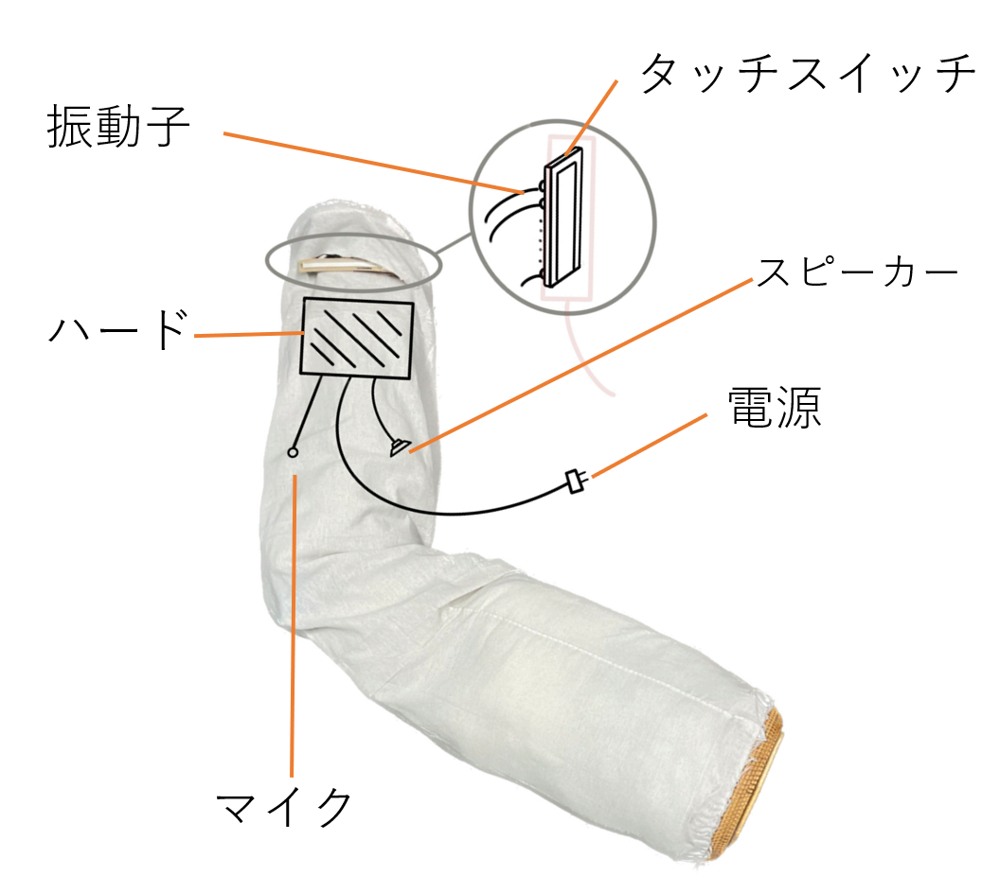
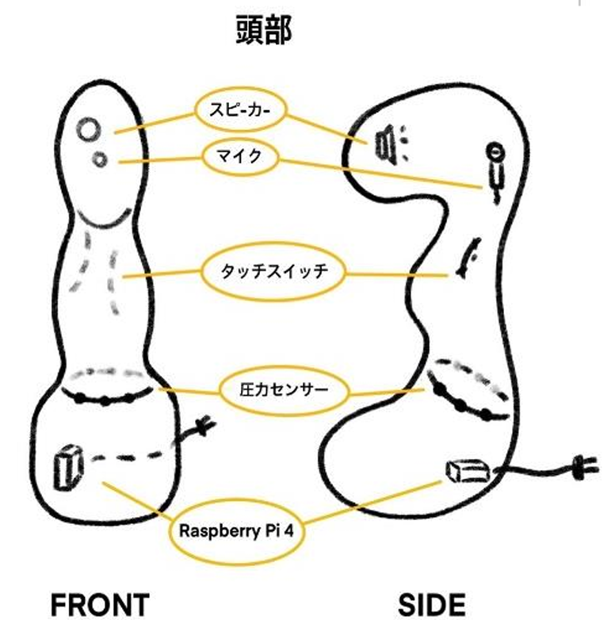
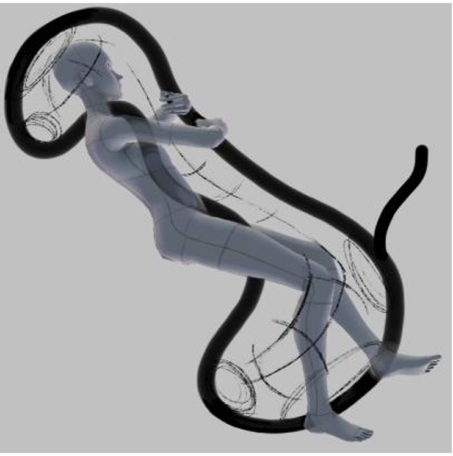
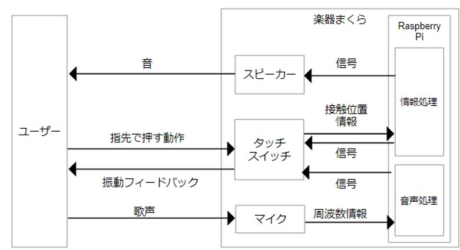
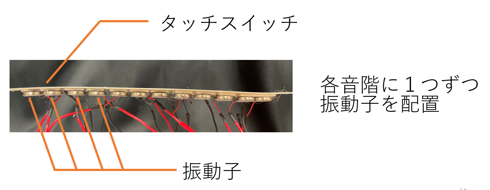
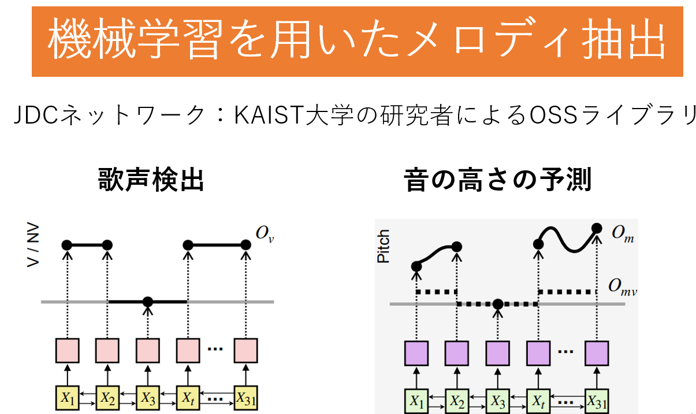
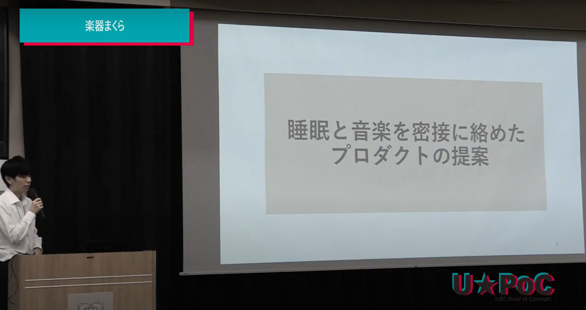

The goal is to develop a musical instrument-playing pillow to discourage smartphone use before sleep. When the touch position sensors are pressed, they detect the position of the finger and output the corresponding pitch of the instrument sound through a speaker. Pressure sensors detect leg compression and add effects to the sound. For playing in the dark, humming is analyzed by a machine learning model and fingerings are indicated through vibrations. This product is intended for people who want to improve their sleep quality or make effective use of their time before bed.
就寝前のスマートフォン使用を抑制することを目的として、楽器演奏ができる抱き枕を開発する。接触位置センサが指で押された位置を検知すると、対応するピッチ（音の高さ）の楽器音をスピーカーに出力する。圧力センサが脚の圧迫を検知すると音にエフェクトを付与する。暗闇でも演奏できるよう、鼻歌を機械学習モデルで解析し、振動を用いて運指を提示する。睡眠の質を向上させたい人や寝る前の時間を有効活用したい人を対象とする。
Explanation
Role
Idea Design/ Hardware/ Software
Idea Development


Prototype



Presentation（Exhibition）
